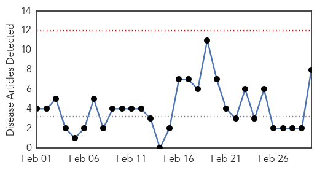
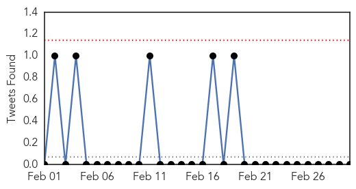
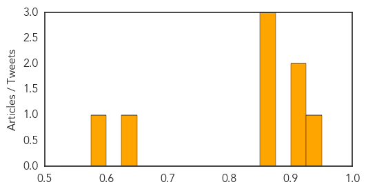
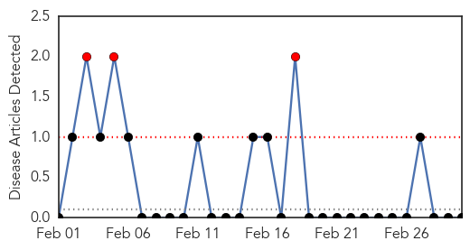

Dengue Fever
30-Day Web Trend
0 alerts, 0 warnings

30-Day Twitter Trend
0 alerts, 0 warnings

Article Locations

Article Confidences
Top Articles:
- 0.929
- The hidden burden of dengue fever in West Africa
- 0.916
- The Global Impact of Neglected Tropical Diseases
- 0.905
- Neglected diseases
- 0.873
- Campaign intensifies
- 0.854
- The hidden burden of dengue fever in West Africa
- 0.852
- Health department demands services of 1,062 female workers
- 0.637
- Govt directs health departments to take steps against dengue virus
- 0.580
- What you need to know about medical care on cruise ships
Top Tweets:
-
No tweets found for Mar 02, 2015
Yellow Fever
30-Day Web Trend
3 alerts, 0 warnings

30-Day Twitter Trend
0 alerts, 0 warnings

Article Locations

Article Confidences

Top Articles:
-
No articles found for Mar 02, 2015
Top Tweets:
-
No tweets found for Mar 02, 2015